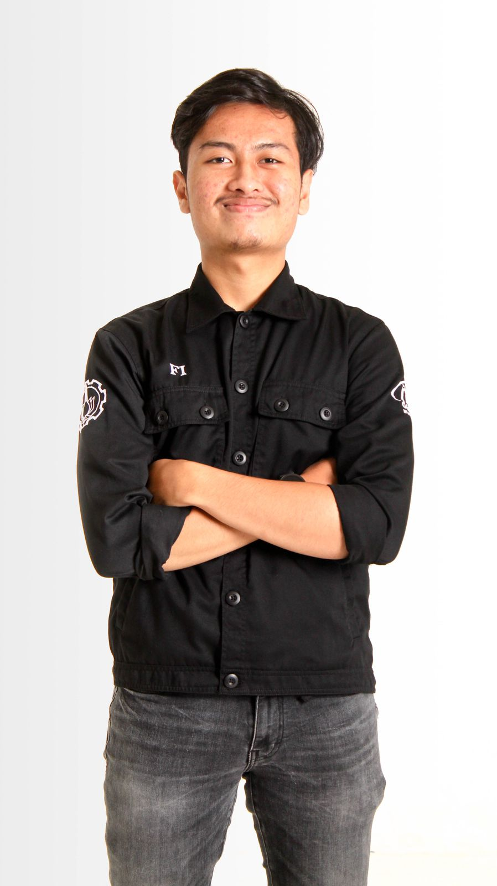

| Agfi's ATS CV | About | Education | Experience | Organization | Skills |
|  |
Thariq Agfi HermawanInformatics Engineering - Sepuluh Nopember Institute of Technology GitHub : thoriqagfi +6285157871266 LinkedIn : Thariq Agfi Hermawan |
About Me |
Freshman Bachelor's degree Student which focused in Informatics Engineering from Sepuluh Nopember Institute of Technology. Highly interested in Front-End Web Development, Data Science, Machine Learning, and Mobile Development with several Certifications. Disciplined and ambitious person with a great motivation. |
Education |
|
Sepuluh Nopember Institute of Technology - Surabaya, Indonesia |
Jul 2021 - Jun 2025 |
Bachelor's Degree in Informatics Engineering |
|
SMA Negeri 55 Jakarta - Jakarta, Indonesia |
Jul 2017 - Jun 2020 |
Experience |
|
Mataram Partners - Jakarta, Indonesia |
Apr 2022 - Aug 2022 |
IT Support Freelance |
|
Mataram partners is an Indonesian law firm specialising in foreign investor services in Indonesia |
|
Mabit NF 2022- Jakarta, Indonesia |
Dec 2021 - Mar 2022 |
FrontEnd Developer |
|
Mabit NF is an educational non profit organization |
|
ITS Online - Surabaya, Indonesia |
Oct 2021 - Present |
Journalist Internship |
|
ITS Online, part of ITS Media Center, is an News Media from Sepuluh Nopember Institute of Technology |
|
Schematics - Surabaya, Indonesia |
Oct 2021 - Present |
FrontEnd Developer |
|
Schematics stands for NST, Art Exhibition, NLC, NPC, and REEVA. Schematics is an annual event organized by ITS Informatics Engineering students |
|
MABACUP - Surabaya, Indonesia |
Jul 2022 - Dec 2022 |
Head of Web Development |
|
Maba Cup is an annual event organized by the Event Department of the ITS Talent Interest Institute |
|
Electics Faculty - Surabaya, Indonesia |
Apr 2022 - Aug 2022 |
Public Relation Internship |
|
ELECTICS ITS Faculty comes with a vision to become a referral faculty in education and research in electrical, electronics, and technology |
|
Ini Lho ITS! - Surabaya, Indonesia |
Oct 2022 - Feb 2023 |
DevOps Staff |
|
Ini Lho ITS! is one of biggest event in ITS that introducing ITS into society |
|
ITS EXPO - Surabaya, Indonesia |
Dec 2022 - Present |
Vice Head of Development |
|
ITS EXPO is the Biggest event in ITS that accomodating ITS entire academic to show art and achievements |
|
Organization |
|
Mabit NF- Jakarta, Indonesia |
Sep 2020 - Apr 2021 |
Vice Chairman Department of Linguistics |
|
KSE ITS- Surabaya, Indonesia |
Sep 2022 - Present |
Branding Staff |
|
Open Recruitment ITS Online- Surabaya, Indonesia |
Jun 2022 - Nov 2022 |
Branding Staff |
|
Mabit NF- Surabaya, Indonesia |
Sep 2022 - Mar 22 |
Branding Staff |
|
Skills and Achievements |